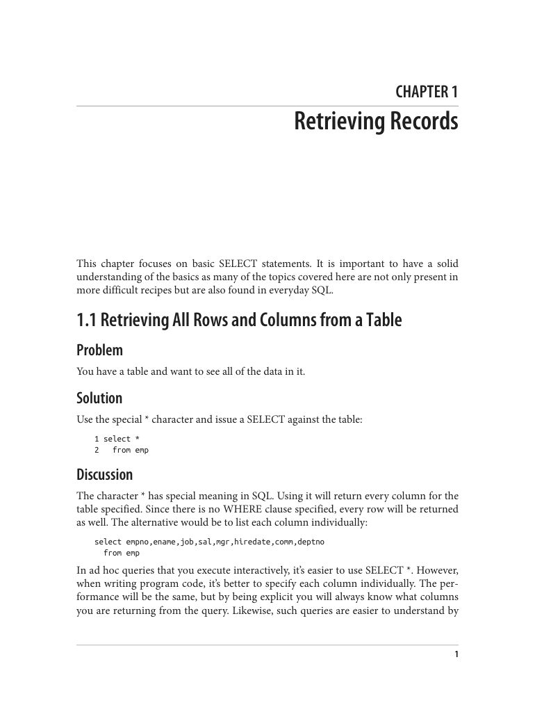
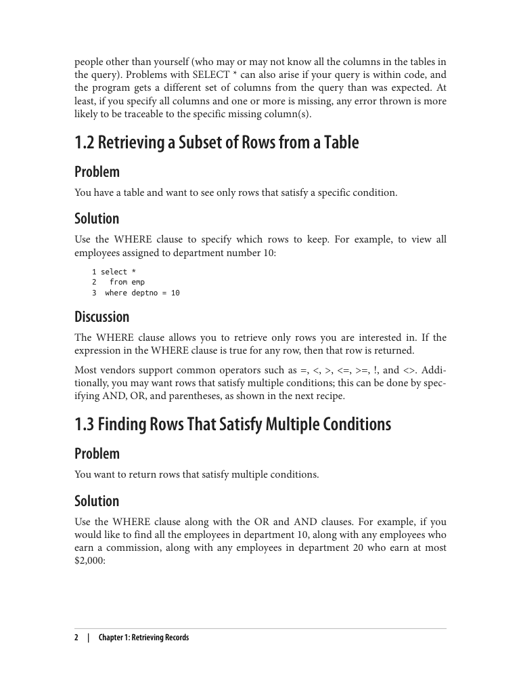
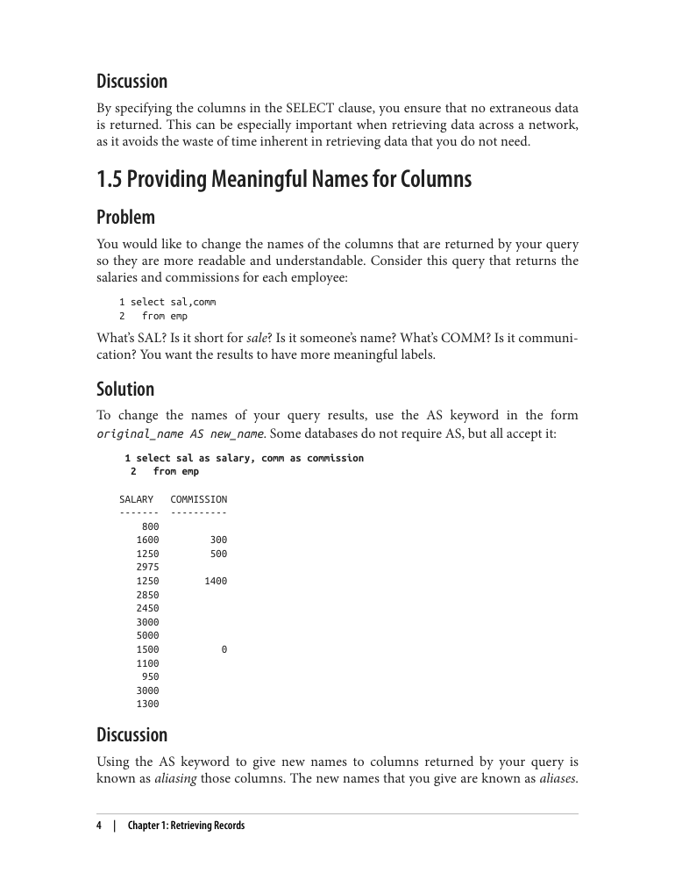
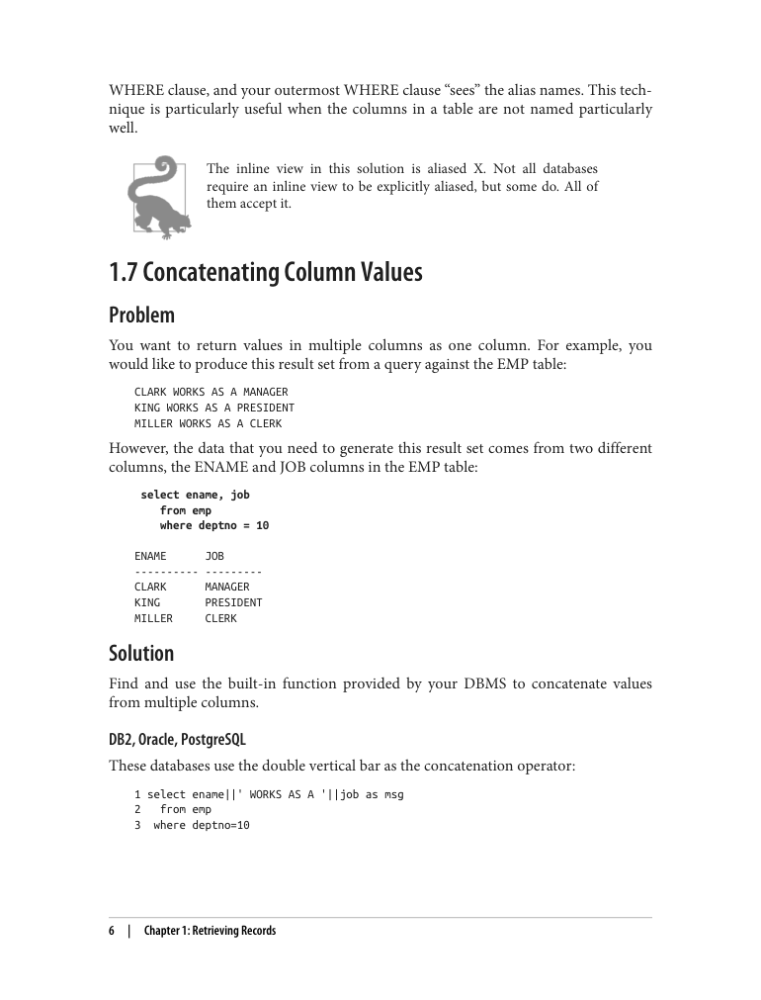
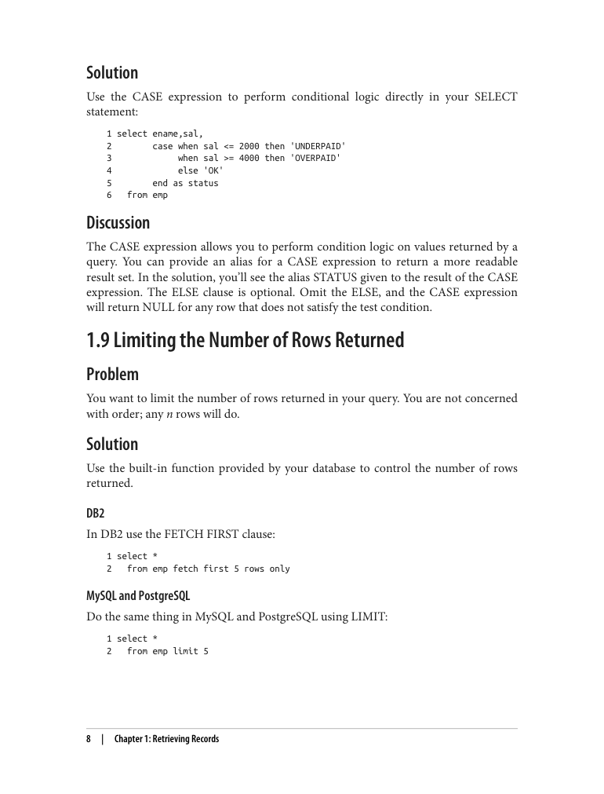
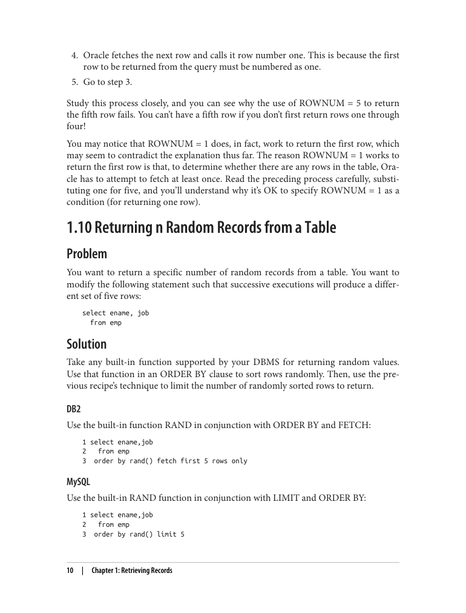
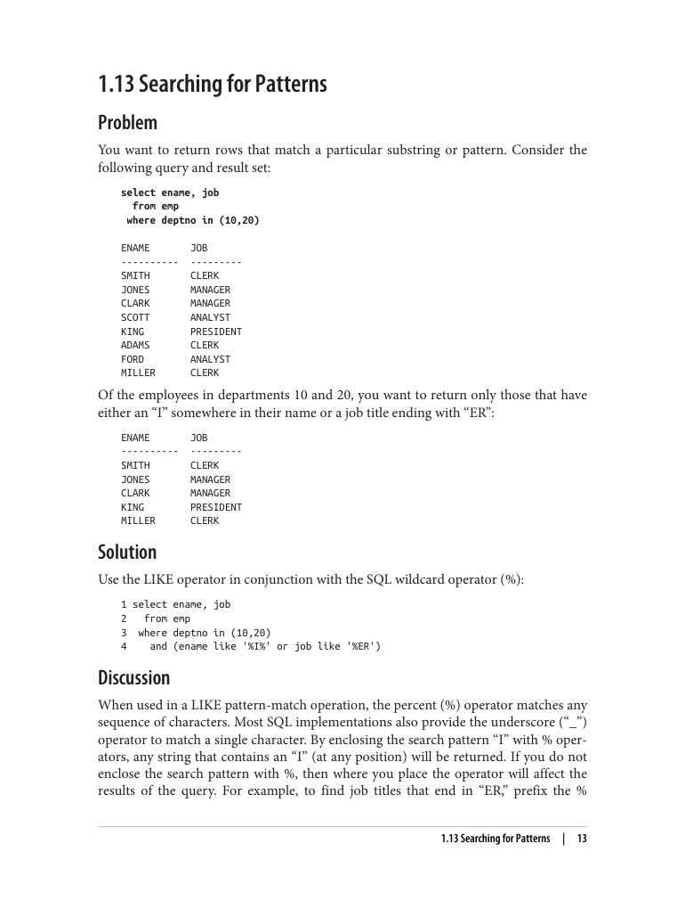

In short: Chapter 1 teaches you how to pull information out of a database table using SELECT. It is the most basic — and most important — skill in SQL, because almost everything else in the book builds on it.
The chapter uses two small example tables that come with the book:
It then walks through 13 short "recipes," each solving one common task, plus a summary section. Here is the plain-English version:
WHERE.AND, OR, and parentheses.WHERE by nesting one query inside another (an inline view).CASE.NULL) and replace it with a real value (COALESCE).LIKE and wildcards.
Almost every recipe runs against the EMP table. Here is what it looks like (straight from the book):
select * from emp;select * from dept;A note on style: the book writes SQL keywords in uppercase when talking about them, but all actual query examples are in lowercase. The code below follows the book's examples.

Plain English: "Show me everything in the table."
1 select *
2 from empThe asterisk * means "every column." Leaving out WHERE means "every row." It is great for looking around interactively, but for real programs it is better to list the columns you want by name.
Plain English: "Show me only the rows that match a condition."
1 select *
2 from emp
3 where deptno = 10WHERE keeps only rows where the condition is true. Common operators: = < > <= >= <>.
Plain English: "Show me rows where condition A, or condition B, or condition C is true."
1 select *
2 from emp
3 where deptno = 10
4 or comm is not null
5 or sal <= 2000 and deptno = 20Use AND and OR to combine conditions, and ( ) parentheses to control which parts are checked together.
Plain English: "Don't show every column — just the ones I care about."
1 select ename, deptno, sal
2 from empNaming columns saves time (especially over a network) and makes results easier to understand than select *.
Plain English: "Give the result columns nicer labels."
1 select sal as salary, comm as commission
2 from empAS renames a column in the output. The new name is called an alias. (You can usually skip AS, but the book always uses it.)
Plain English: "I renamed a column, now let me filter by that new name."
This does not work, because WHERE is processed before the renaming happens:
select sal as salary, comm as commission
from emp
where salary < 5000 -- error: SALARY doesn't exist yetThe fix is to wrap the query inside another query (called an inline view):
1 select *
2 from (
3 select sal as salary, comm as commission
4 from emp
5 ) x
6 where salary < 5000The inner query runs first, produces the renamed columns, and the outer WHERE can then use them. The letter x is just a required nickname for the inner query.

Plain English: "Stick two or more text columns together into one."
Example result the chapter wants:
Every database does this a little differently:
| Database | Code |
|---|---|
| DB2, Oracle, PostgreSQL | select ename || ' WORKS AS A ' || job as msg from emp where deptno = 10 |
| MySQL | select concat(ename, ' WORKS AS A ', job) as msg from emp where deptno = 10 |
| SQL Server | select ename + ' WORKS AS A ' + job as msg from emp where deptno = 10 |

Plain English: "If salary is low, say 'UNDERPAID'; if high, say 'OVERPAID'; otherwise say 'OK'."
1 select ename, sal,
2 case when sal <= 2000 then 'UNDERPAID'
3 when sal >= 4000 then 'OVERPAID'
4 else 'OK'
5 end as status
6 from empCASE is SQL's if/then/else. The ELSE part is optional — leave it out and unmatched rows get NULL.
Plain English: "I don't need all the rows — just give me the first five."
Each database has its own way:
| Database | Code |
|---|---|
| DB2 | select * from emp fetch first 5 rows only |
| MySQL, PostgreSQL | select * from emp limit 5 |
| Oracle | select * from emp where rownum <= 5 |
| SQL Server | select top 5 * from emp |
rownum numbers rows as they are fetched, so rownum = 5 never works — you can never reach row five without first returning rows one through four.
Plain English: "Give me five random rows, different each time I run it."
The trick: sort the rows by a random function, then limit the result.
| Database | Code |
|---|---|
| DB2 | select ename, job from emp order by rand() fetch first 5 rows only |
| MySQL | select ename, job from emp order by rand() limit 5 |
| PostgreSQL | select ename, job from emp order by random() limit 5 |
| Oracle | select * from (select ename, job from emp order by dbms_random.value()) where rownum <= 5 |
| SQL Server | select top 5 ename, job from emp order by newid() |

Plain English: "Show me rows where a column is empty/unknown."
1 select *
2 from emp
3 where comm is nullNULL means "unknown," and it is never equal to anything — not even itself. So you must use IS NULL (or IS NOT NULL), never = or <>.
Plain English: "Show a real value (like 0) whenever the column is empty."
1 select coalesce(comm, 0)
2 from empCOALESCE returns the first non-empty value in its list — here, the commission if there is one, otherwise 0. It works in all the databases the book covers. You could do the same thing with CASE, but COALESCE is shorter.
Plain English: "Find rows where text contains a certain letter or ends with certain letters."
1 select ename, job
2 from emp
3 where deptno in (10, 20)
4 and (ename like '%I%' or job like '%ER')LIKE does pattern matching. The % wildcard stands for "any text": '%I%' finds names containing an I anywhere, and '%ER' finds jobs ending in ER (like CLERK, MANAGER, PRESIDENT).

Plain English: "These recipes are simple, but they are the foundation of everything else in the book."
Getting data out of a table is the core of database querying. Once you are comfortable with selecting columns, filtering rows, renaming output, handling empty values, and matching text patterns, the harder recipes in later chapters become much easier.
| Task | Key SQL | Recipe |
|---|---|---|
| Everything from a table | select * from emp | 1.1 |
| Filter rows | where deptno = 10 | 1.2 |
| Multiple conditions | and / or / ( ) | 1.3 |
| Pick columns | select ename, sal from emp | 1.4 |
| Rename a column | as (alias) | 1.5 |
| Filter by alias | inline view (query inside from) | 1.6 |
| Join text together | || / concat() / + | 1.7 |
| If/then logic | case ... when ... then ... end | 1.8 |
| First N rows | limit / fetch first / top / rownum | 1.9 |
| Random N rows | order by rand() / random() / newid() | 1.10 |
| Empty values | is null / is not null | 1.11 |
| Replace empty values | coalesce(col, 0) | 1.12 |
| Text patterns | like '%text%' | 1.13 |